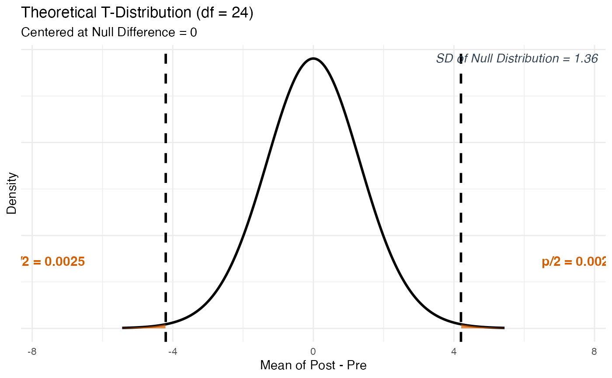
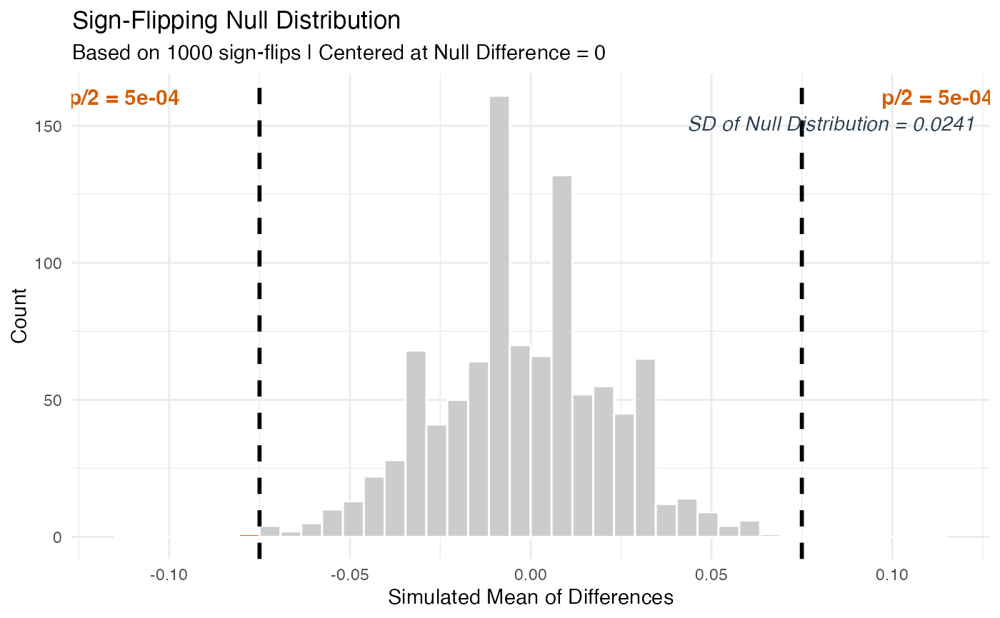
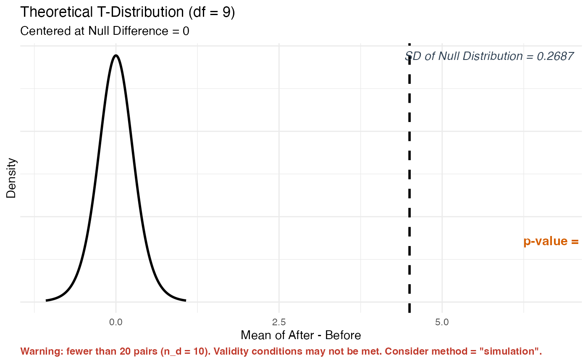
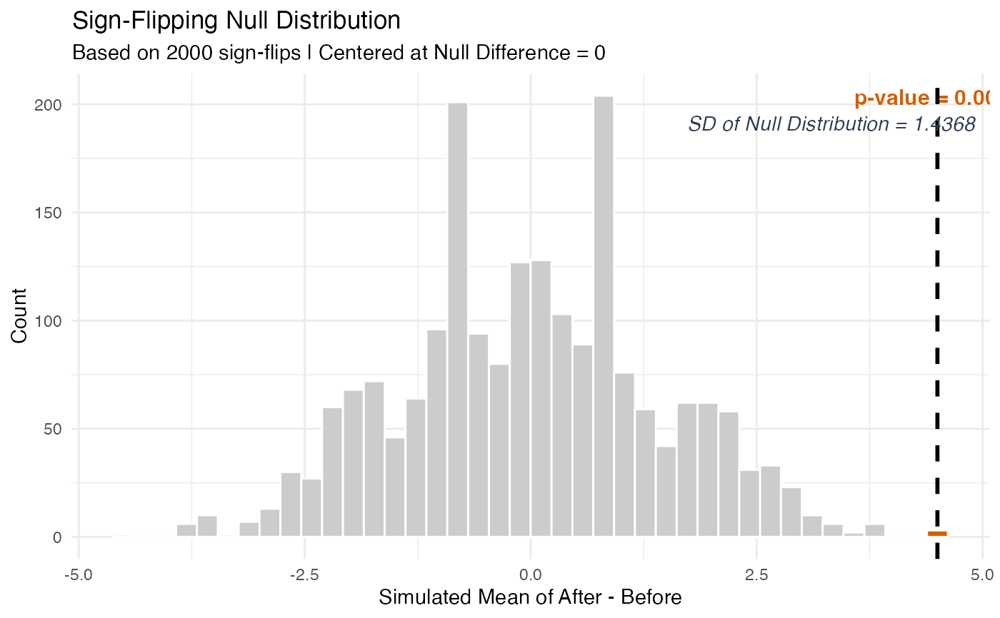

Tests whether the true mean difference between paired measurements is zero (\(\mu_d = 0\)) using either a theory-based T-test or a simulation-based sign-flipping approach (when raw data is provided).
Paired data arises when each subject contributes two related measurements – for example, a before/after reading, a left/right measurement, or two treatments applied to the same subject. Because the two measurements within each pair are linked, we work with the differences rather than treating the two groups independently.
This function accepts input in three ways:
Summary Statistics: You already know the mean difference, standard deviation of differences, and number of pairs. Pass
x_bar_d,sd_d, andn_ddirectly. Note thatmethod = "simulation"is not available with summary statistics – simulation requires the individual difference values.Single Differences Column: You have a dataset with one column containing the pre-computed differences (After minus Before, or Treatment minus Control, etc.). Use
formula = ~ Differenceswith your data frame.Two Columns (Before/After): You have a dataset with two separate columns – one for each measurement. Use
formula = After ~ Beforeand the function computes the differences automatically as After minus Before for each pair.
Usage
test_paired(
x_bar_d = NULL,
sd_d = NULL,
n_d = NULL,
formula = NULL,
data = NULL,
name = "Differences",
alternative = "two.sided",
method = "theory",
sim_reps = 1000
)Arguments
- x_bar_d
The observed sample mean of the differences. Positive values mean the first measurement (or "After") tends to be larger; negative values mean it tends to be smaller. Only used when NOT providing
formulaanddata.- sd_d
The standard deviation of the differences across all pairs. Only used when NOT providing
formulaanddata.- n_d
A whole number representing the total number of pairs. Only used when NOT providing
formulaanddata.- formula
A formula specifying the data structure. Two formats are accepted:
~ DifferencesA one-sided formula when your dataset contains a single column of pre-computed differences. Replace
Differenceswith the actual column name.After ~ BeforeA two-sided formula when your dataset has two separate measurement columns. The function computes
After - Beforefor each row automatically.
Only used when NOT providing
x_bar_d,sd_d, andn_d.- data
A data frame (loaded from a
.csv,.txt, or.xlsxfile) containing the variable(s) named informula. Only used when NOT providing summary statistics.- name
A short descriptive label for what the differences represent. Used in plot axis labels. For example,
name = "After - Before"orname = "Treatment - Control". Defaults to"Differences".- alternative
The direction of the alternative hypothesis (H\(_a\)). Must be one of:
"two.sided"H\(_a\): \(\mu_d \neq 0\) (default) – use when testing if the mean difference is simply different from zero in either direction.
"greater"H\(_a\): \(\mu_d > 0\) – use when testing if the mean difference is positive (After tends to be larger than Before).
"less"H\(_a\): \(\mu_d < 0\) – use when testing if the mean difference is negative (After tends to be smaller than Before).
- method
The method used to calculate the p-value. Must be one of:
"theory"(default) Uses a one-sample T-test on the differences, with degrees of freedom = n\(_d\) - 1 handled automatically in the background. Appropriate when the number of pairs is at least 20, or when the distribution of differences is roughly symmetric.
"simulation"Uses a Sign-Flipping simulation. For each repetition, a coin is flipped for every pair – heads means the sign of that pair's difference is flipped (swapping which measurement came "first"), tails means it stays as is. This simulates the null hypothesis that the two measurements are completely interchangeable. Requires raw data.
- sim_reps
The number of sign-flipping repetitions when
method = "simulation". Default is1000. Increasing to5000gives a more stable p-value estimate.
Value
An S3 object of class stat218_test_paired containing all
computed values. You can use the following methods on the result:
print(result)Displays a clean summary including the mean difference, SD of null distribution, test statistic, and p-value.
plot(result)Plots the null distribution with shaded p-value region(s) and SD of Null Distribution annotated.
plot_steps(result)Displays a detailed three-panel step-by-step interpretation with proper fraction notation.
Details
The Core Idea
In a paired data test, we reduce the problem to a one-sample mean test on the differences. Instead of comparing two groups, we ask: "Is the average difference we observed across all pairs consistent with zero (no real effect), or is it too far from zero to be explained by random chance alone?"
The null hypothesis always takes the form H\(_0\): \(\mu_d = 0\), where \(\mu_d\) is the true mean of all possible pair differences in the population.
Why Paired and Not Two-Sample?
Because the two measurements within each pair are linked to the same subject, treating them as two independent groups would ignore that connection and throw away important information. By working with differences, we control for subject-to-subject variability.
Simulation Method (Sign-Flipping)
Under the null hypothesis, the two measurements for each subject are completely interchangeable – it does not matter which one we call "Before" and which we call "After." To simulate this, we flip a coin for each pair. Heads means we swap the two values (flipping the sign of the difference); tails means we leave them as is. We then compute the mean of all the (possibly flipped) differences. Repeating this thousands of times builds the null distribution. The SD of that distribution goes in the denominator of the test statistic.
Examples
# --- Summary Statistics Path (two-sided, theory) ---
# Students took a pre-test and post-test. Mean improvement was 4.2 points.
result <- test_paired(
x_bar_d = 4.2, sd_d = 6.8, n_d = 25,
name = "Post - Pre",
alternative = "two.sided", method = "theory"
)
print(result)
#>
#> ── Paired Data Hypothesis Test (Theory) ────────────────────────────────────────
#> ℹ Mean Difference (x-bar_d): 4.2
#> ℹ SD of Differences (s_d): 6.8
#> ℹ Number of Pairs (n_d): 25
#> ℹ Null Hypothesis: mu_d = 0
#> ℹ Alternative: mu_d != 0
#> • SD of Null Distribution: 1.36
#> • Test Statistic (T): 3.088
#> • P-Value: 0.005
plot(result)

if (FALSE) { # \dontrun{
plot_steps(result)
} # }
# --- Single Differences Column (simulation) ---
# Compute the difference (wide - narrow) and store it as a new column
firstbase$diff <- firstbase$wide - firstbase$narrow
result2 <- test_paired(
formula = ~ diff,
data = firstbase,
alternative = "two.sided",
method = "simulation"
)
#> ✔ Using pre-computed differences from variable "diff".
#> • Number of pairs (n_d): 22
plot(result2)

if (FALSE) { # \dontrun{
plot_steps(result2)
} # }
# --- Two Columns Before/After (theory) ---
# Using a manually created before/after dataset.
study_data <- data.frame(
Before = c(72, 68, 75, 80, 65, 70, 78, 82, 69, 74),
After = c(78, 72, 80, 84, 70, 75, 82, 85, 73, 79)
)
result3 <- test_paired(
formula = After ~ Before, data = study_data,
name = "After - Before",
alternative = "greater", method = "theory"
)
#> ✔ Differences computed as "After" minus "Before".
#> • Number of pairs (n_d): 10
#> Warning: ! Validity conditions for the theory-based T-test may not be met.
#> ℹ There are only 10 pairs, which is fewer than 20.
#> ℹ Proceed only if the distribution of differences is roughly symmetric.
#> ℹ Otherwise consider using `method = "simulation"` if raw data is available.
print(result3)
#>
#> ── Paired Data Hypothesis Test (Theory) ────────────────────────────────────────
#> ℹ Mean Difference (x-bar_d): 4.5
#> ℹ SD of Differences (s_d): 0.8498
#> ℹ Number of Pairs (n_d): 10
#> ℹ Null Hypothesis: mu_d = 0
#> ℹ Alternative: mu_d > 0
#> • SD of Null Distribution: 0.2687
#> • Test Statistic (T): 16.745
#> • P-Value: 0
#> Warning: ! Validity conditions may not be met -- fewer than 20 pairs (n_d = 10).
#> ℹ Verify that the distribution of differences is roughly symmetric.
#> ℹ Consider using `method = "simulation"` if raw data is available.
plot(result3)

if (FALSE) { # \dontrun{
plot_steps(result3)
} # }
# --- Two Columns Before/After (simulation, sign-flipping) ---
result4 <- test_paired(
formula = After ~ Before, data = study_data,
name = "After - Before",
alternative = "greater", method = "simulation", sim_reps = 2000
)
#> ✔ Differences computed as "After" minus "Before".
#> • Number of pairs (n_d): 10
print(result4)
#>
#> ── Paired Data Hypothesis Test (Simulation) ────────────────────────────────────
#> ℹ Mean Difference (x-bar_d): 4.5
#> ℹ SD of Differences (s_d): 0.8498
#> ℹ Number of Pairs (n_d): 10
#> ℹ Null Hypothesis: mu_d = 0
#> ℹ Alternative: mu_d > 0
#> • SD of Null Distribution: 1.4368
#> • Test Statistic (Z_sim): 3.132
#> • P-Value: 0.0015
plot(result4)

if (FALSE) { # \dontrun{
plot_steps(result4)
} # }